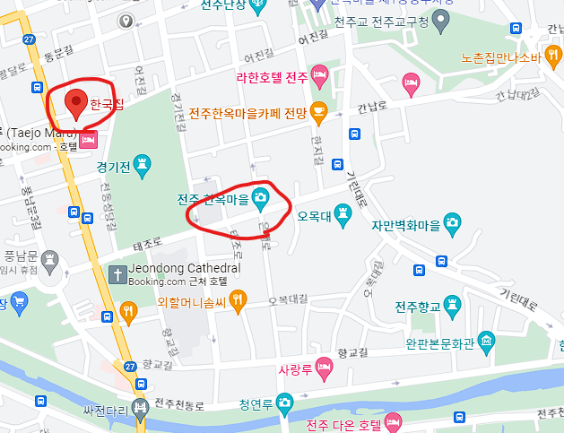

홈페이지로 돌아가는 버튼
전주는 전라북도에 위치한 전라북도의 제 1의 도시입니다.
전주는 고대 한국사의 뿌리가 되는 지역으로 경주와 더불어 전통문화를 즐길 수 있는 여행지입니다.
전주의 특징은 도시이지만 전통적인 모습을 많이 볼 수 있게 과거와 현재가 조화를 이루고 있다는 점입니다.
한국적인 분위기를 느껴보고 싶다면 전주로 떠나는 것을 추천드립니다.

자가용의 경우 서울에서 부산까지 약 2시간 반이 소요됩니다.
통행료는 약 13000원이며 주유비는 약 32000원 정도가 발생합니다.
자세한 정보는 해당 사이트를 통해서 확인이 가능합니다.
대중교통의 경우 버스와 기차가 존재합니다.
버스의 경우 서울기준 2시간 반 정도 소요되며 다양한 터미널을 통해서 접근이 가능합니다.
비용의 경우 약 13000원 정도 발생합니다.
기차의 경우 용산역기준 약 1시간 30분 정도가 소요되어 전주역에 도착합니다.
비용의 경우 약 34000원 정도 발생합니다.
전주의 맛집으로는 한국집을 추천합니다.
구글 평점 기준 3.8점 이상이며 리뷰수도 1000건이 넘을 정도로 검증된 비빔밥집입니다.
한국집에서는 비빕밥의 최고봉으로 뽑히는 전주비빔밥을 즐기기에 매우 휼륭한 곳입니다.
한국집은 지역명소인 전주한옥마을 내에 있기에 한옥마을을 둘러보다 허기질때 들르기에 매우 편리합니다.

전주의 숙소로는 한옥호텔 동락원을 추천드립니다.
전주는 한옥마을이 특징인 만큼 눈으로만 즐기는 것이 아니라 직접 즐겨보고 싶다면 한옥호텔을 추천드립니다.
한옥호텔 동락원은 전주한옥마을과 매우 가까워서 지리적인 이점을 가지고 있습니다.
숙소의 가격은 1박에 6만원으로 생각보다 저렴하게 한옥에서의 하룻밤을 보낼 수 있습니다.
다만 가격이 저렴하다 보니 부대시설은 상대적으로 빈약하게 느껴질 수 있습니다.
그렇지만 바로 옆에 한옥마을이 있기에 부담없이 한옥마을에서 놀고 돌아올 수 있으며
한옥으로 둘러쌓인 곳에서 한옥에서의 하룻밤이라는 이색적인 경험을 할 수 있을 것입니다.
자세한 정보는 해당 사이트를 참고해주세요.